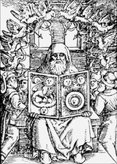

|
|
|
|
|

|
| |
"Alchimia
est impuri separatio a substantia puriore" |
|
"L'Alchimie
est la séparation de l'impur de la
substance plus pure" |
|
|
|
|
|
| Tabula
Smaragdina aurait été retrouvée entre
les mains d'Hermès, dans la grotte
lui servant de tombeau. Texte fondateur
mais pas des plus anciens, les alchimistes
lisent en lui l'œuvre entier de la nature
et le procédé pouvant aboutir à l'obtention
de la pierre philosophale. |
|
|
| La
Table d'émeraude d'Hermès Trismégiste, Père
des philosophes |
|
|
I.
Il est vrai sans mensonge, certain et très
véritable.
II. Ce qui est en bas, est comme ce
qui est en haut et ce qui est en haut,
est comme ce qui est en bas, pour faire les
miracles d'une seule chose.
III. Et comme toutes les choses ont
été, et sont venues d'un, par la méditation
d'un : ainsi toutes les choses ont été nées
de cette chose unique, par adaptation.
IV. Le soleil en est le père, la lune
est sa mère, le vent l'a porté dans son
ventre; la terre est sa nourrice.
V. Le père de tout le telesme de tout
le monde est ici. Sa force ou puissance
est entière,
VI. Si elle est convertie en terre.
VII. Tu sépareras la terre du feu,
le subtil de l'épais doucement, avec grande
industrie.
VIII. Il monte de la terre au ciel,
et derechef il descend en terre, et il reçoit
la force des choses supérieures et inférieures.
Tu auras par ce moyen la gloire de tout
le monde et pour cela toute obscurité s'enfuira
de toi.
IX. C'est la force forte de toute force
: car elle vaincra toute chose subtile, et
pénétrera toute chose solide.
X. Ainsi le monde a été créé.
XI. De ceci seront et sortiront d'admirables
adaptations, desquelles le moyen en est
ici.
XII. C'est pourquoi j'ai été appelé
Hermès Trismégiste, ayant les trois parties
de la philosophie de tout le monde. Ce que
j'ai dit de l'opération du soleil est
accompli, et parachevé. |
|
|
|
|
|
 |
| La
Table d'Emeraude (Tabula Smaragdina) |
| |
|
|
| La
fabrication de la pierre philosophale
résulte d'une démarche chimique complexe.
L'alchimiste doit trouver la Prima Materia
dans les profondeurs de la terre, puis
la dissoudre, c'est-à-dire la transformer
en eau, avant d'en évacuer la quantité superflue.
C'est ce qu'on appelle la volatilisation.
Le produit issu de ces premières modifications
est coagulé et transformé en matière visqueuse.
Ce n'est qu'ensuite que l'on peut séparer
les matières et retirer les plus pures
qui constitueront la Pierre Philosophale. |
|
| Pour
simplifier, on peut expliquer le processus
par 3 opérations portant le nom de la couleur
qui lui est associée. |
|
1-
Œuvre au noir ou putréfaction, permettant
de débarrasser la matière de ses impuretés.
2- Œuvre au blanc ou albification de
laquelle résulte une pierre blanche capable
de transmuter le métal de base en argent.
3- Œuvre au rouge, Grand Œuvre ou rubification
qui est l'obtention de l'or, de la pierre
philosophale. Elle est symbolisée par le phénix,
oiseau mythique qui renaît de ses cendres.
|
|
| Si
l'obtention de la pierre philosophale peut
être issue de ces trois principes de transformation,
il existe une seconde théorie, celle du soufre
et du mercure, reposant sur la purification
des 4 éléments. |
|
|
|
|
|
La
Table d'Emeraude (Tabula Smaragdina)
|
|
|
|
La
théorie du soufre et du mercure (selon
la tradition arabe) |
|
| Matière
première |
|
|
>
Terre |
|
|
>
Soufre |
>
Feu |
| >
Sel |
>
Quintessence (extrait des 4 éléments
purifiés) |
| >
Mercure |
>
Eau |
|
>
Air |
|
|
|
| Le
pouvoir de la pierre philosophale naît
de la perfection de sa composition,
alliant dans des proportions harmonieuses
métaux et éléments de base auxquels s'ajoute
la quintessence, cinquième élément de synthèse.
Elle permet d'obtenir l'élixir de vie
ou or potable et de transmuter les métaux
en or. |
|
|
|
|
|
|
|
|
|
|
|
Le Kybalion est un livre qui a été écrit aux États-Unis, par trois initiés : William Walker Atkinson, Paul Foster Case et Mabel Collins. Traduit en français en 1917, c'est le complément indispensable à la Table d'Émeraude.
Ce livre est le résultat d'une transmission orale de la doctrine hermétiste d'initié à initié à travers les siècles. Cette chaîne, à travers le temps, s'est appelée le Kybalion. Sa connaissance embrasse les rapports de l'Homme avec la Nature. Sa pratique rend l'Initié « Roi de l'Univers Matériel » d'où son nom d'Art Royal. On y trouve les définitions des sept Principes Hermétiques, des Lois de la Vie, de l'Univers Mental, du Divin Paradoxe, du Tout, des Plans de Correspondance, de la Vibration, de la Polarité, etc. |
|
|
|
C'est de l'ancienne Égypte que nous viennent les enseignements ésotériques et occultes fondamentaux qui ont si puissamment influencé les philosophies de toutes les races, des nations et des peuples depuis plusieurs milliers d'années.
L'Égypte, patrie des pyramides et des sphinx était le berceau de la Sagesse cachée et des enseignements mystiques. Tous les pays ont emprunté à ses Doctrines Secrètes. L' Inde, la Perse, la Chaldée, la Médée, la Chine, le Japon, la Syrie, l'ancienne Grèce, Rome et les autres nations anciennes prirent libéralement leur part à la fête du Savoir que les Hiérophantes et les Maîtres du Pays d'Isis avaient si abondamment pourvue pour ceux qui étaient préparés à partager la somme de Science Mystique et Occulte dévoilée par les Maîtres de cette antique contrée. |
| |
|
Les 7 « principes » hermétiques transmis par le Kybalion sont les suivants : |
| |
| 1. Le Principe de Mentalisme [MENTALISM] |
| |
| "Le Tout est Esprit ; l'Univers est Mental." |
| |
Ce Principe implique cette vérité que "Tout est Esprit". Il explique que le Tout qui est la Réalité Substantielle se trouvant dans toutes les manifestations et les apparences extérieures que nous connaissons sous le nom d’ "Univers Matériel", "Phénomène de la Vie", "Matière", "Energie", et en un mot tout ce qui est apparent est Esprit lequel, en lui-même, est inconnaissable et indéfinissable, mais qui peut être considéré et pensé comme un Esprit Universel, Infini, Vivant.
Il explique encore que le monde ou l’univers "phénoménal" n’est qu’une simple Création Mentale du Tout sujette aux Lois des Choses Créées ; que l’univers considéré dans son entier ou dans ses parties, existe dans l’Esprit du Tout, que c’est dans cet Esprit "que nous vivons, que nous agissons et que nous sommes nous-mêmes". Ce Principe, en établissant la Nature Mentale de l’Univers, explique facilement tous les divers phénomènes mentaux et psychiques qui occupent une si grande place dans l’attention publique et qui, sans explications, ne sont pas compréhensibles et défient toute interprétation scientifique. |
| |
| 2. Le Principe de Correspondance [CORRESPONDENCE] |
| |
| "Ce qui est en Haut est comme ce qui est en Bas ; ce qui est en Bas est comme ce qui est en Haut." |
| |
Ce Principe implique la Vérité qu’il y a toujours un rapport constant entre les lois et les phénomènes des, divers plans de l’Etre et de la Vie. Le vieil axiome hermétique l’explique en ces termes. "Ce qui est en Haut est comme ce qui est en Bas ; ce qui est en Bas est comme ce qui est en Haut". Comprendre ce principe confère les moyens de résoudre bien des paradoxes obscurs et bien des secrets cachés de la Nature.
Il existe des plans de vie que nous ignorons complètement ; mais quand nous leur appliquons le Principe de Correspondance, nous devenons capables de comprendre plus loin qu’il ne nous aurait été possible de le faire autrement. Il se manifeste et s’applique partout dans l’univers, sur les divers plans de l’univers matériel, mental et spirituel ; c’est une Loi Universelle. |
| |
| 3. Le Principe de Vibration [VIBRATION] |
| |
| "Rien ne repose ; tout remue ; tout vibre." |
| |
Ce Principe implique la vérité que "tout est en mouvement", "tout vibre", "rien n’est à l’état de repos", faits que la science moderne accepte et que toute nouvelle découverte scientifique tend à vérifier. Il y a des milliers d’années que les Maîtres de l’ancienne Egypte ont énoncé ce Principe hermétique. Il explique que les différences existant entre les diverses manifestations de la Matière, de l’Energie, de l’Ame, et même de l’Esprit, sont la conséquence d’une proportion inégale de Vibrations. Depuis le Tout, qui est l’Esprit Pur, jusqu’aux formes les plus grossières de la matière, tout vibre ; plus grande est la vibration, plus haute est la position sur l’échelle. La vibration, de l’Esprit est tellement intense et si infiniment rapide qu’elle est pratiquement en repos, de même qu’une roue qui tourne avec une grande rapidité paraît arrêtée. A l’autre extrémité de l’échelle il y a les formes grossières de la matière dont les vibrations sont si lentes qu’elles paraissent ne pas exister. Entre ces deux pôles opposés, il y a des millions et des millions de degrés différents de vibrations.
Depuis le corpuscule et l’électron, depuis l’atome et la molécule jusqu’aux mondes et aux univers, tout se meut, tout vibre. Cela est vrai également pour l’énergie et pour la force, qui ne sont que des degrés différents de vibration ; cela est vrai encore pour le plan mental dont les vibrations régissent l’état, et même pour le plan spirituel. |
| |
| 4. Le Principe de Polarité [POLARITY] |
| |
| "Tout est Double ; toute chose possède des pôles ; tout a deux extrêmes ; semblable et dissemblable ont la même signification ; les pôles opposés ont une nature identique mais des degrés différents ; les extrêmes se touchent ; toutes les vérités ne sont que des demi vérités ; tous les paradoxes peuvent être conciliés." |
| |
Ce Principe implique la vérité que "tout est double", "tout a deux pôles", "tout a deux extrêmes" ; ces phrases sont de vieux axiomes hermétiques. Elles expliquent les anciens paradoxes qui ont rendu perplexes tant de gens et que l’on a exprimés comme il suit : "La thèse et l’antithèse ont une nature identique, mais des degrés différents" ; "les contraires sont semblables et ne diffèrent que par leur degré" ; "les pôles opposés peuvent se concilier" ; "les extrêmes se touchent" ; "tout est et n’est pas, en même temps" ; "toutes les vérités ne sont que des demi-vérités" ; "toute vérité est à moitié fausse" ; "il y a deux faces à chaque chose", etc.
Le Principe de Polarité explique que, dans toute chose, il y a deux pôles, deux aspects opposés, et que les "contraires" ne sont en réalité que les deux extrêmes du même objet entre lesquels sont intercalés des degrés différents. Par exemple : le chaud et le froid bien "qu’opposés" sont en réalité une seule et même chose ; ils se distinguent simplement par une différence de degrés. Consultez votre thermomètre et voyez s’il vous est possible de découvrir où le "chaud" se termine et où le "froid" commence ! Il n’existe pas un "chaud absolu" ni un "froid absolu" ; ces deux termes "chaud" et "froid" indiquent simplement des degrés différents de la même chose, et cette "même chose" qui se manifeste comme "chaud" et "froid" est une simple forme, une Variante de la Vibration., Ainsi "chaud" et "froid" ne sont que les "deux pôles" de ce que nous appelons "Chaleur", et les phénomènes qui les accompagnent sont les manifestations du Principe de Polarité. Le même Principe est vrai dans le cas de "Lumière" et "Obscurité", qui sont une seule et même chose, la distinction consistant en une différence de degrés entre les deux pôles du phénomène. Quand la "nuit" nous quitte-t-elle et quand le "jour" commence-t-il ? Quelle différence y a-t-il entre "Grand et Petit ?" Entre "Facile et Difficile ?" Entre "Blanc et Noir ?" Entre "Tranchant et émoussé ? ’" Entre "Calme et Inquiet ?" Entre "Haut et Bas ?" Entre "Positif et Négatif ?".
Le Principe de Polarité explique ces paradoxes et aucun autre ne peut le remplacer. C’est encore, le même Principe qui agit dans le plan mental. Prenons un exemple extrême, mais radical, celui de la "Haine et de l’Amour", deux états mentaux en apparence totalement différents. Et encore, il y a différents degrés dans la Haine et dans l’Amour ; il y a même des sentiments intermédiaires pour lesquels nous employons les mots de "Sympathie" et "d’Antipathie" qui arrivent à se confondre si étroitement qu’on a souvent beaucoup de difficulté à savoir si quelqu’un vous est sympathique, antipathique ou s’il vous est indifférent. Ces sentiments opposés ne sont que des degrés différents d’un sentiment unique.
|
| |
| 5. Le Principe de Rythme [RHYTHM] |
| |
| "Tout s'écoule, au-dedans et au-dehors ; toute chose a sa durée ; tout évolue puis dégénère ; le balancement du pendule se manifeste dans tout; la mesure de son oscillation à droite est semblable à la mesure de son oscillation à gauche ; le rythme est constant." |
| |
Ce principe implique la vérité qu’il se manifeste dans toute chose un mouvement mesuré d’allée et venue, un flux et un reflux, un balancement en avant et en arrière, un mouvement pareil à celui d’un pendule, quelque chose de semblable à la marée montante et descendante, à une mer pleine et à une mer basse ; ce mouvement d’allée et venue se produit entre les deux pôles, dont le Principe de Polarité décrit il y a quelques instants, nous a montré l’existence.
Il y a toujours une action et une réaction, un progrès et un recul, un maximum et un minimum. Il en est ainsi pour tous les. éléments de l’Univers, les soleils, ’les mondes, les hommes, les animaux, l’esprit, l’énergie et la matière. Cette loi se manifeste dans la création et la destruction des mondes, dans le progrès et la décadence des nations, dans la vie de toute chose et enfin dans l’état mental de l’homme ; c’est pour cette dernière chose que les hermétistes estiment plus importante la compréhension du principe. Ce Principe et le Principe de Polarité et les méthodes pour les contrecarrer, les neutraliser,ont été minutieusement étudiés par les hermétistes, et les utiliser constituent une partie importante de l’Alchimie Hermétique Mentale.
|
| |
| 6. Le Principe de Cause et d'Effet [CAUSE EFFECT] |
| |
| "Toute Cause a son Effet ; tout Effet a sa Cause ; tout arrive conformément à la Loi ; la Chance n'est qu'un nom donné à la Loi méconnue ; il y a de nombreux plans de causalité, mais rien n'échappe à la Loi" |
| |
Ce Principe implique le fait qu’il existe une Cause pour tout Effet produit et un Effet pour toute Cause. Il explique que : "Tout arrive conformément à la Loi" ; que "jamais rien n’arrive fortuitement" ; que le Hasard n’existe pas ; que, puisque il y a des plans différents de Cause et d’Effet, et que le plan supérieur domine toujours le plan inférieur, rien ne peut échapper entièrement à la Loi.
Les hermétistes connaissent jusqu’à un certain point l’art et les méthodes de s’élever au-dessus du plan ordinaire de la Cause et de l’Effet. En s’élevant mentalement à un plan supérieur, ils deviennent la Cause au lieu d’être l’Effet. Les foules se laissent docilement emmener ; elles obéissent à tout ce qui les entoure, aux volontés et aux désirs de ceux qui sont plus puissants qu’elles, à l’hérédité, à la suggestion, et à toutes les autres causes extérieures qui les dirigent comme de simples pions sur l’Echiquier de la Vie. Les Maîtres, au contraire, s’élevant sur le plan supérieur, dominent leurs sentiments, leur caractère, leurs qualités et leurs pouvoirs aussi bien que ce qui les environne ; ils deviennent des Maîtres au lieu d’être des pions. Ils jouent le jeu de la vie au lieu d’être joués et dirigés par la volonté des autres et par les influences extérieures. Ils se servent du Principe au lieu d’être ses outils.
|
| |
| 7. Le Principe de Genre [GENDER] |
| |
| "Il y a un genre en toutes choses ; tout a ses Principes Masculin et Féminin ; le Genre se manifeste sur tous les plans." |
| |
Ce Principe implique la vérité que le Genre existe en tout ; les Principes Masculin et Féminin sont constamment en action. Cela est vrai, non seulement sur le Plan Physique, mais encore sur le Plan Mental et même sur le Plan Spirituel. Sur le Plan Physique, le Principe se manifeste sous la forme du sexe ;sur le Plan Supérieur, il prend des formes plus élevées, mais il est toujours le même.
Aucune création physique, mentale ou spirituelle n’est possible sans lui. La compréhension de ses Lois jettera la lumière sur bien des sujets qui ont constamment rendu perplexes l’esprit des hommes. Le Principe du Genre agit toujours pour créer et pour régénérer. Toute chose, tout individu, contient les deux Eléments Masculin et Féminin ou le grand Principe lui-même. Tout Elément Mâle a son Elément Féminin ; tout Principe Féminin contient le Principe Mâle.
|
|
|
|
|
|
| Première version traduite en Français |
|
 |
|
|  |
|
 |
|
|
|
|
|